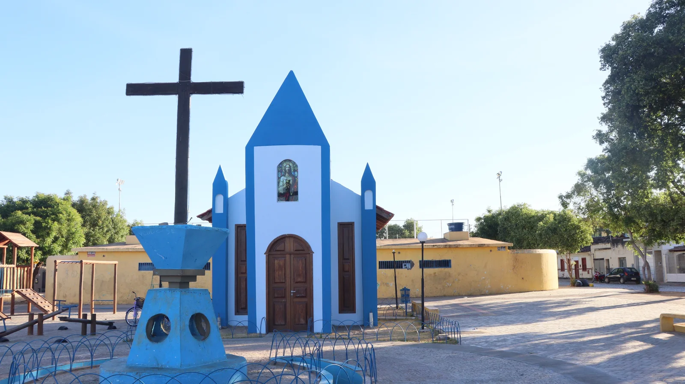

Sobre o local
O Quilombo Urbano da Rua de Baixo é o berço da cultura januarense. É um dos territórios de maior importância para a preservação da memória e da cultura de Januária. Localizado no entorno da Capela de Santa Cruz e às margens do Velho Chico, esse território foi uma das centralidades que moldaram o desenvolvimento urbano de Januária.
A história da Rua de Baixo está profundamente ligada ao trabalho e aos saberes de pescadores, lavadeiras, tratadeiras de peixe, aguadeiras, quitandeiras e vazanteiros, que construíram suas vidas às margens do Velho Chico e preservaram conhecimentos transmitidos entre gerações. Essa herança permanece viva nas manifestações culturais que caracterizam o território, como o Terno dos Temerosos, o Maculelê, a Puxada de Rede, a Capoeira, a Dança de São Gonçalo e os Reis de Bois.
O território ganha especial movimento durante os Festejos de Santa Cruz, realizados há mais de um século no mês de maio[cite: 11]. Nesse período, fé, memória e cultura se encontram em uma celebração, revelando uma comunidade que acolhe toda a cidade com muito afeto[cite: 11]. A programação é marcada por apresentações de artistas locais e pelas manifestações culturais que expressam a identidade do território.
Os festejos também são uma oportunidade para apreciar os tradicionais quitutes da Rua de Baixo, entre eles o cascarrão e os biscoitos fritos, sabores que atravessam gerações e integram a memória afetiva dos januarenses[cite: 11]. Gastronomia, religiosidade e manifestações culturais fazem do território um importante símbolo da ancestralidade e da identidade barranqueira de Januária.
Atualmente, a Feira Gastronômica e Cultural da Praça Santa Cruz acontece semanalmente, às quintas-feiras, a partir das 19h, oferecendo ao visitante a oportunidade de conhecer sabores da culinária local e vivenciar manifestações da cultura do território[cite: 11]. No local, também é possível conhecer a réplica da Capela de Santa Cruz, referência que remete à antiga igreja que marcou o imaginário e as memórias das gerações mais antigas de januarenses.
Informações sobre o local
Localização: Praça Santa Cruz
Horário de funcionamento: Visitação livre diariamente
Tipo de visita: Visita livre
Formas de pagamento: Não há cobrança para acesso
Pet-friendly: Sim
Instagram: @quilomboruadebaixo